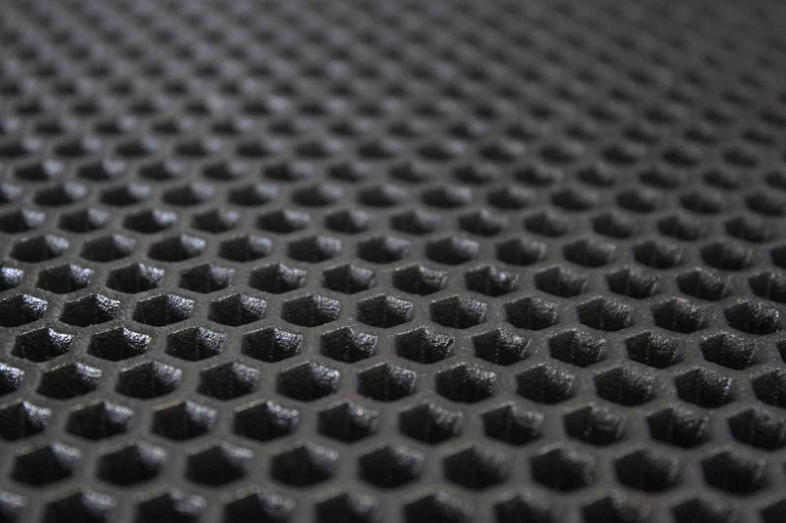
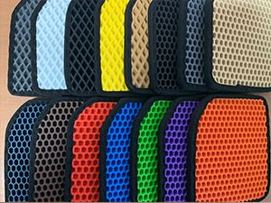

Что такое EVA коврики?

МАТЕРИАЛ
Коврики EVA всесезонные и отличаются уникальной поверхностью материала с ячейками ромбовидной формы. Из-за чего вода не проливается при изъятии ковра и не плещется при езде. Коврики воду не пропускают.

отличия
Коврики EVA всесезонные и отличаются уникальной поверхностью материала с ячейками ромбовидной формы. Из-за чего вода не проливается при изъятии ковра и не плещется при езде. Коврики воду не пропускают.

РАСЦВЕТКА
Коврики EVA всесезонные и отличаются уникальной поверхностью материала с ячейками ромбовидной формы. Из-за чего вода не проливается при изъятии ковра и не плещется при езде. Коврики воду не пропускают.
Покупала у ребят коврики для Хундай солярис в подарок молодому человеку. Все очень понравилось. Буду советовать только вас.
Покупала у ребят коврики для Хундай солярис в подарок молодому человеку. Все очень понравилось. Буду советовать только вас.
Покупала у ребят коврики для Хундай солярис в подарок молодому человеку. Все очень понравилось. Буду советовать только вас.